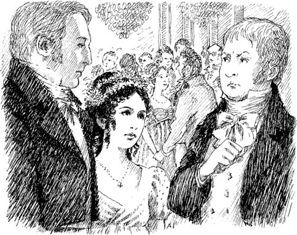

Buổi dạ hội ở Thượng viện
Thứ năm đó, James, Catherine Morland và bà Allen đã đến Thượng viện. Họ gặp Isabella Thorpe ở đó. Họ ngồi xuống trong một phòng khách rộng rãi.
"Isabella, em sẽ nhảy với anh chứ?" James hỏi.
"Anh trai em không ở đây," Isabella nói. "Catherine không có bạn nhảy. Em sẽ đợi cho đến khi John đến."
Nhưng một lúc sau, Isabella đã đứng dậy.
"John sắp đến rồi," cô nói. "Em sẽ nhảy với James ngay bây giờ."
Catherine Morland cảm thấy buồn bã. Cô ấy là một cô gái xinh đẹp không có bạn nhảy. Cô nhìn quanh phòng. Đột nhiên, cô nhìn thấy ông Tilney. Nhưng ông ấy đang ở bên cạnh một phụ nữ trẻ xinh đẹp!
Người phụ nữ trẻ đó đến chỗ một số người khác. Ông Tilney từ từ đi ngang qua phòng. Ông cúi chào Catherine và bà Allen.
"Tôi rất vui khi được gặp lại ông, ông Tilney," bà Allen nói.
"Em gái tôi, Eleanor, cũng ở đây cùng tôi tối nay," ông Tilney nói. Sau đó, ông mỉm cười với Catherine và mời cô nhảy.
"Tôi rất tiếc," Catherine nói. "Nhưng tôi đang đợi ông Thorpe. Tôi sẽ nhảy với ông ấy."
Lúc đó, John Thorpe đến chỗ họ. "Chúng ta sẽ nhảy ngay bây giờ, cô Morland," anh ta nói.
Sau khi nhảy xong, John Thorpe rời khỏi phòng.
Isabella Thorpe đến chỗ Catherine.
"Anh trai em muốn nhảy thêm một điệu nữa với em!" cô nói. "Nhưng chị cũng phải nhảy thêm một điệu nữa với anh ấy chứ, bạn thân mến của em."
Ông Tilney đến chỗ Catherine. "Bây giờ cô có muốn nhảy với tôi không?" ông hỏi.
Catherine rất vui. Cô đứng dậy và ông Tilney nắm lấy tay cô. Lúc đó, John Thorpe quay lại phòng. Anh ta đi về phía họ.
"Cô Morland!" John Thorpe nói. "Tại sao cô không nhảy với tôi? Người đàn ông này là ai?"
"Đây là ông Henry Tilney," Catherine nói. "Ông ấy muốn nhảy với tôi. Anh không ở trong phòng."

"Bây giờ tôi là bạn nhảy của cô Morland," Henry Tilney nói. Ông rất lịch sự. "Điệu nhảy sắp bắt đầu. Xin lỗi chúng tôi."
John Thorpe rất tức giận. Anh ta bỏ đi.
Catherine và ông Tilney bắt đầu khiêu vũ.
"Cô đã ở Bath ba tuần rồi, cô Morland," ông Tilney nói. "Cô có thấy buồn chán không? Hay là cô đang tận hưởng bầu không khí ở đây?"
"Bath không hề buồn chán chút nào," Catherine nói.
"Nhưng gia đình cô không ở Bath sao?"
"Anh trai tôi ở đây," Catherine nói. "Và tôi có một số người bạn tốt."
Ông Tilney mỉm cười. "Em gái tôi, Eleanor, cũng sẽ là bạn của cô thôi," ông nói.
Một lúc sau, điệu nhảy kết thúc. Catherine thấy có người đang nhìn mình. Đó là một cụ già cao lớn, đẹp trai.
Ông Tilney đến chỗ cụ già. Ông nói chuyện với cụ. Sau đó, Henry Tilney quay lại chỗ Catherine.
"Người đàn ông đó là cha tôi, Tướng Tilney," ông nói. "Ông ấy hỏi tên của cô."
Catherine lại nhảy thêm một điệu nữa với Henry Tilney. Sau đó, ông Tilney giới thiệu cô với em gái mình. Catherine ngồi xuống và Eleanor Tilney ngồi cạnh cô. Eleanor khoảng hai mươi hai tuổi. Cô ấy rất xinh đẹp và mặc một chiếc váy màu trắng.
"Cảnh vật xung quanh Bath rất đẹp," Eleanor Tilney nói. "Henry và tôi thường đi dạo ở đó cùng nhau. Xin mời cô đi cùng chúng tôi một hôm. Xin mời cô đi ngày mai!"
"Ồ, vâng," Catherine trả lời. "Tôi đang ở cùng gia đình Allen. Họ có một căn hộ ở phố Pulteney. Chúng ta hãy gặp nhau ở đó lúc mười hai giờ đúng nhé."
Catherine lại có thêm một người bạn mới. Cô ấy rất vui.
Mục lục
- Trang tiêu đề
- Trang bản quyền
- Mục lục
- Ghi chú về tác giả
- Ghi chú về tác phẩm
- Nhân vật trong tác phẩm
- 1. Catherine đến Bath
- 2. Những người bạn mới của Catherine
- 3. John và James
- 4. Vũ hội tại Upper Rooms
- 5. 'Tại sao cô lừa tôi thế?'
- 6. Catherine và gia đình Tilney
- 7. Isabella đang yêu
- 8. Đại úy Frederick Tilney
- 9. Isabella và James
- 10. Tu viện Northanger
- 11. 'Cô Morland thân mến ơi!'
- 12. Thăm Woodston
- 13. Thư của Isabella
- 14. Catherine trở về nhà
- 15. 'Cô sẽ lấy tôi chứ?'